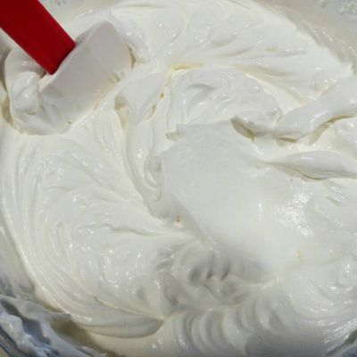

← Volver al módulo 6

Torta 15 Años (Masa y Remojo)
Torta delicada y esponjosa, perfecta para celebraciones de quince años, con un toque de limón y esencia de vainilla.
Ingredientes de la Masa
- 450 g de harina
- 75 g de maicena
- 18 huevos medianos
- 375 g de azúcar
- 27 g de polvo de hornear
- 125 ml de aceite
- 25 ml de esencia de vainilla
- 25 ml de leche
- ½ taza de aceite
- 2 cáscaras de ralladura de limón
- Papel sábana
Ingredientes del Remojo
- 7 tazas de leche
- Esencia de vainilla
Preparación de la Masa
-
Realizar el mise en place.
-
Separar claras y yemas. Batir las claras con la mitad del azúcar hasta punto nieve y añadir el polvo de hornear.
-
Batir las yemas con la otra mitad del azúcar hasta blanquear. Añadir el aceite en hilo, esencia de vainilla y ralladura de limón.
-
Mezclar yemas, claras y harina con movimientos envolventes.
-
Preparar los moldes con aceite y papel sábana. Verter la mezcla en cantidades iguales.
-
Hornear a 180°C durante 20–25 minutos. Enfriar y desmoldar.
Preparación del Remojo
-
Mezclar la leche con esencia de vainilla.
-
Humedecer la masa uniformemente con esta mezcla.